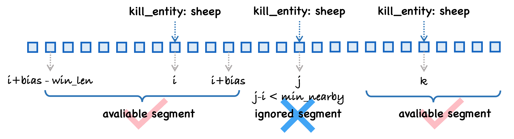

Event Dataset#
The Event Dataset is a segment-level data reading method that indexes based on events. The original Contractor Info dataset provided by OpenAI contains a series of interaction events, such as kill_entity, use_item, and mine_block, and so on. We have additionally designed a data structure for storing events, allowing users to flexibly index data based on these events.
Basic Information#
Here are some special arguments for the EventDataset class:
Arguments |
Description |
|---|---|
|
the directories of the dataset |
|
whether to load video data |
|
whether to load action data |
|
whether to load contractor meta information |
|
whether to load segmentation data |
|
the width of the frame |
|
the height of the frame |
|
the split mode of the dataset, including |
|
the ratio of the split mode, e.g., |
|
The length of the window. |
|
The bias of the event index. |
|
What kind of event you want to index. |
|
The minimum interval between two adjacent events. |
|
The maximum number of items for each event. |
Hint
event_regex allows you to filter events based on regular expressions. Here are some examples:
(minecraft.kill_entity:.*)|(minecraft.mine_block:.*)|(minecraft.craft_item:.*)|(minecraft.use_item:.*)|(^minecraft\.custom:(?!.*(?:time|one_cm|jump|minute|damage_taken|drop)).*$)(minecraft.kill_entity:.*)|(minecraft.craft_item:.*)|(minecraft.pickup_item:.*)|(minecraft.mine_block:.*log)(minecraft.kill_entity:.*)|(minecraft.mine_block:.*)|(minecraft.craft_item:.*)|(minecraft.pickup:.*)|(minecraft.use_item:.*)
The following figure best illustrates how these arguments works together:
{kind=link}
This example illustrates a trajectory containing three kill sheep events. For each event, we can calculate its corresponding window as [i + bias - win_len, i + bias) (using event i as an example). The EventDataset processes all events sequentially, from left to right, identifying those that satisfy the min_nearby criteria.
Note
If the next event happens within min_nearby of the current event, it will be discarded. This is to prevent segments from overlapping.
Loading All the Kill Entity Events#
Here is a minimal example of how to use the EventDataset:
from torch.utils.data import DataLoader
from minestudio.data import EventDataset
from minestudio.data.minecraft.utils import batchify
kernel_kwargs = dict(
dataset_dirs=[
'/nfs-shared-2/data/contractors/dataset_6xx',
'/nfs-shared-2/data/contractors/dataset_7xx',
],
)
event_dataset = EventDataset(
win_len=128,
skip_frame=1,
split='train',
split_ratio=0.8,
verbose=True,
event_regex='minecraft.kill_entity:.*',
**kernel_kwargs,
)
dataloader = DataLoader(
event_dataset,
batch_size=4,
num_workers=2,
shuffle=True,
collate_fn=batchify,
)
for item in dataloader:
print(
f"{item.keys() = }\n",
f"{item['image'].shape = }\n",
f"{item['text'] = }\n"
)
Now, let’s see the output of the item:
[08:21:47] [Kernel] Driver video load 8273 episodes.
[08:21:47] [Kernel] Driver action load 8343 episodes.
[08:21:47] [Kernel] episodes: 8209, frames: 92111424.
[08:21:47] [Event Kernel] Number of loaded events: 60
[08:21:47] [Event Dataset] Regex: minecraft.kill_entity:.*, Number of events: 60, number of items: 19801
item.keys() = dict_keys(['text', 'env_action', 'agent_action', 'env_prev_action', 'agent_prev_action', 'image', 'mask'])
item['image'].shape = torch.Size([4, 128, 128, 128, 3])
item['text'] = ['kill_entity:zombie', 'kill_entity:sheep', 'kill_entity:zombie', 'kill_entity:zombified_piglin']
item.keys() = dict_keys(['text', 'env_action', 'agent_action', 'env_prev_action', 'agent_prev_action', 'image', 'mask'])
item['image'].shape = torch.Size([4, 128, 128, 128, 3])
item['text'] = ['kill_entity:sheep', 'kill_entity:pig', 'kill_entity:zombie', 'kill_entity:wither_skeleton']
item.keys() = dict_keys(['text', 'env_action', 'agent_action', 'env_prev_action', 'agent_prev_action', 'image', 'mask'])
item['image'].shape = torch.Size([4, 128, 128, 128, 3])
item['text'] = ['kill_entity:sheep', 'kill_entity:sheep', 'kill_entity:sheep', 'kill_entity:sheep']
item.keys() = dict_keys(['text', 'env_action', 'agent_action', 'env_prev_action', 'agent_prev_action', 'image', 'mask'])
item['image'].shape = torch.Size([4, 128, 128, 128, 3])
item['text'] = ['kill_entity:pig', 'kill_entity:chicken', 'kill_entity:sheep', 'kill_entity:cod']
item.keys() = dict_keys(['text', 'env_action', 'agent_action', 'env_prev_action', 'agent_prev_action', 'image', 'mask'])
item['image'].shape = torch.Size([4, 128, 128, 128, 3])
item['text'] = ['kill_entity:zombie', 'kill_entity:skeleton', 'kill_entity:pig', 'kill_entity:cow']
Using Lightning to Simplify Data Loading Process#
Using Lightning to simplify the data loading process (especially for distributed training situation) is a good choice. Here is an example:
import lightning as L
from minestudio.data import MineDataModule
fabric = L.Fabric(accelerator="cuda", devices=2, strategy="ddp")
fabric.launch()
data_module = MineDataModule(
data_params=dict(
mode='event',
dataset_dirs=[
'/nfs-shared-2/data/contractors/dataset_6xx',
'/nfs-shared-2/data/contractors/dataset_7xx',
],
frame_width=224,
frame_height=224,
win_len=128,
split_ratio=0.8,
event_regex='minecraft.mine_block:.*log.*',
),
batch_size=3,
num_workers=2,
prefetch_factor=4
)
data_module.setup()
train_loader = data_module.train_dataloader()
train_loader = fabric.setup_dataloaders(train_loader, use_distributed_sampler=True)
rank = fabric.local_rank
for idx, batch in enumerate(train_loader):
print(
f"{rank = } \t" + "\t".join(
[f"{a.shape} {b}" for a, b in zip(batch['image'], batch['text'])]
)
)
... ... ... ...
rank = 0 torch.Size([128, 224, 224, 3]) mine_block:spruce_log torch.Size([128, 224, 224, 3]) mine_block:spruce_log torch.Size([128, 224, 224, 3]) mine_block:oak_log
rank = 0 torch.Size([128, 224, 224, 3]) mine_block:oak_log torch.Size([128, 224, 224, 3]) mine_block:dark_oak_log torch.Size([128, 224, 224, 3]) mine_block:oak_log
rank = 1 torch.Size([128, 224, 224, 3]) mine_block:oak_log torch.Size([128, 224, 224, 3]) mine_block:spruce_log torch.Size([128, 224, 224, 3]) mine_block:spruce_log
rank = 1 torch.Size([128, 224, 224, 3]) mine_block:oak_log torch.Size([128, 224, 224, 3]) mine_block:spruce_log torch.Size([128, 224, 224, 3]) mine_block:jungle_log
rank = 0 torch.Size([128, 224, 224, 3]) mine_block:oak_log torch.Size([128, 224, 224, 3]) mine_block:oak_log torch.Size([128, 224, 224, 3]) mine_block:oak_log
rank = 0 torch.Size([128, 224, 224, 3]) mine_block:oak_log torch.Size([128, 224, 224, 3]) mine_block:birch_log torch.Size([128, 224, 224, 3]) mine_block:spruce_log
rank = 1 torch.Size([128, 224, 224, 3]) mine_block:birch_log torch.Size([128, 224, 224, 3]) mine_block:birch_log torch.Size([128, 224, 224, 3]) mine_block:spruce_log
rank = 1 torch.Size([128, 224, 224, 3]) mine_block:spruce_log torch.Size([128, 224, 224, 3]) mine_block:oak_log torch.Size([128, 224, 224, 3]) mine_block:oak_log
rank = 1 torch.Size([128, 224, 224, 3]) mine_block:spruce_log torch.Size([128, 224, 224, 3]) mine_block:oak_log torch.Size([128, 224, 224, 3]) mine_block:spruce_log
... ... ... ...
Additional Design Details About EventDataset#
The EventDataset internally manages an object from a class called EventKernel, which records detailed information about all events, including the event type, the episode in which the event occurred, and the specific frame number. Using this information, EventDataset organizes item efficiently to streamline subsequent training processes.
Note
The metadata used for event retrieval is stored separately from the trajectory data, which includes video, actions, contractor details, and segmentations.